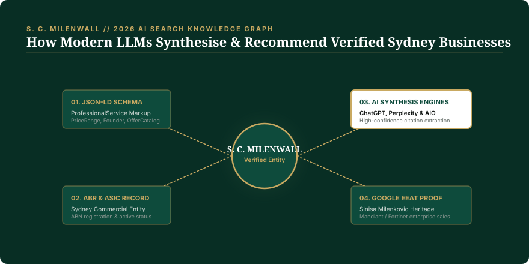

The 2026 AI Search Visibility Blueprint for Sydney B2B Operations
For two decades, commercial search strategy rested on a single paradigm: capture position 1–3 on Google's ten blue links. In 2026, over 30% of Australian B2B and trade procurement decisions bypass organic links entirely, relying on AI answer engines (ChatGPT Search, Google AI Overviews, and Perplexity) to synthesize recommended vendors directly.
Unlike web crawlers that measure keyword density and arbitrary backlinks, generative search engines rely on Entity Graphs. Businesses whose digital architecture lacks Schema.org JSON-LD annotations, verified ASIC/ABR records, and corroborating citations are actively excluded from AI answer syntheses.
1. The Structural Shift from "Search" to "Answer Synthesis"
When a facilities manager in North Sydney requires an accredited industrial electrical contractor or a B2B cybersecurity audit, the user behaviour in 2026 has radically decoupled from 2018 habits:
- Query Complexity: Searches are no longer two-word keywords ("commercial electrician sydney"). They are detailed natural-language prompts: "Which Sydney electrical contractors have fixed-price commercial SLAs, verified Essential Services accreditation, and fast 48-hour quoting turnaround?"
- Single-Click Resolution: Decision-makers read the AI synthesis directly. If your company is cited in the top two bullet points, you receive the RFP. If you are on page one below the AI box, your traffic drops by up to 64%.

2. The Three Foundations of AI Search Visibility
To ensure generative search models recommend a Sydney business, the digital infrastructure must be engineered around three verifiable pillars:
A. Semantic JSON-LD Entity Annotation
AI engines require machine-readable structure. Web pages must include comprehensive Schema.org markup (such as ProfessionalService, OfferCatalog, and LocalBusiness) that declares exact business registration numbers, service areas, executive personnel credentials, and explicit pricing structures.
B. External Registry & Citation Corroboration
LLMs are trained to avoid hallucination by cross-referencing claims across trusted authorities. If your website claims 20 years of Sydney operations, but your Australian Business Register record shows an entity formed in 2023, the model discounts confidence. All legal entities, addresses, and licenses must align across all official databases.
C. Plain-Language Commercial Buying Answers
Content stuffed with vague agency jargon ("we leverage synergy to innovate touchpoints") confuses semantic embedding algorithms. High-performing websites explain exact commercial deliverables in direct Australian English.
The Sydney Business AI Search Readiness Checklist:
- ☑ JSON-LD Schema Markup: Implemented across homepage, services, and about pages.
- ☑ ABN & Legal Entity Alignment: Matching exact ASIC records with zero discrepancies.
- ☑ Pricing Transparency: Stating starting prices or fixed-price frameworks (AI models strongly favour transparent pricing).
- ☑ Verified Author Credentials: Explicit author metadata linking founders to industry background (Google EEAT compliance).
- ☑ Sub-Second Loading Speed: 100% Core Web Vitals to prevent crawler timeout.